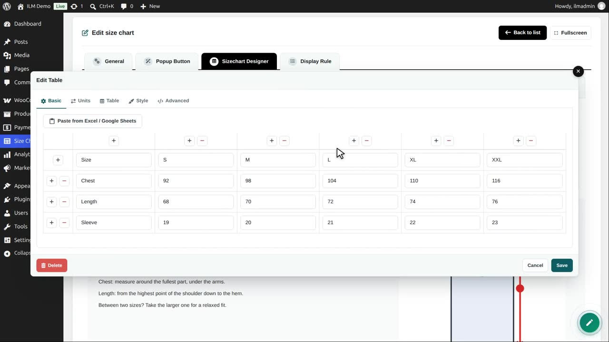
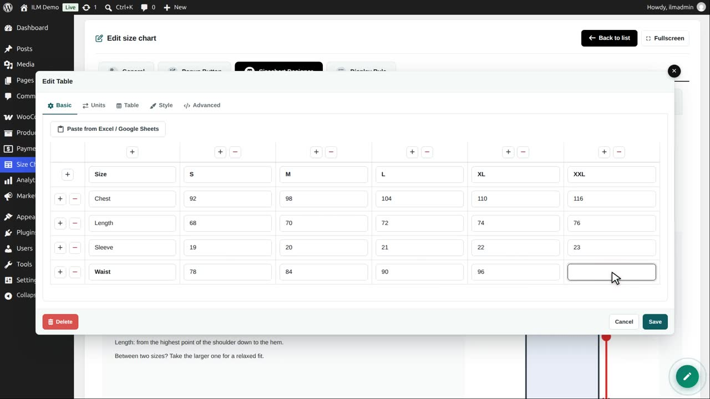
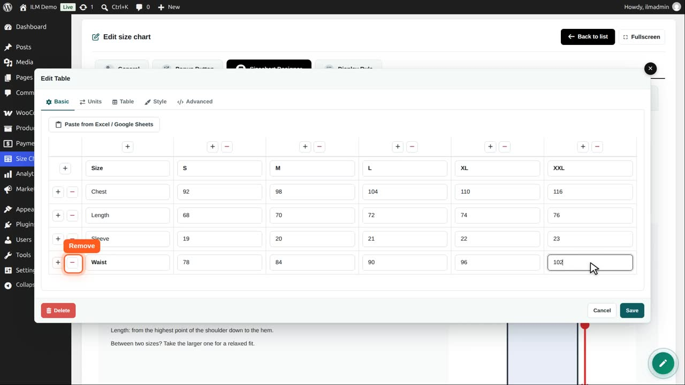
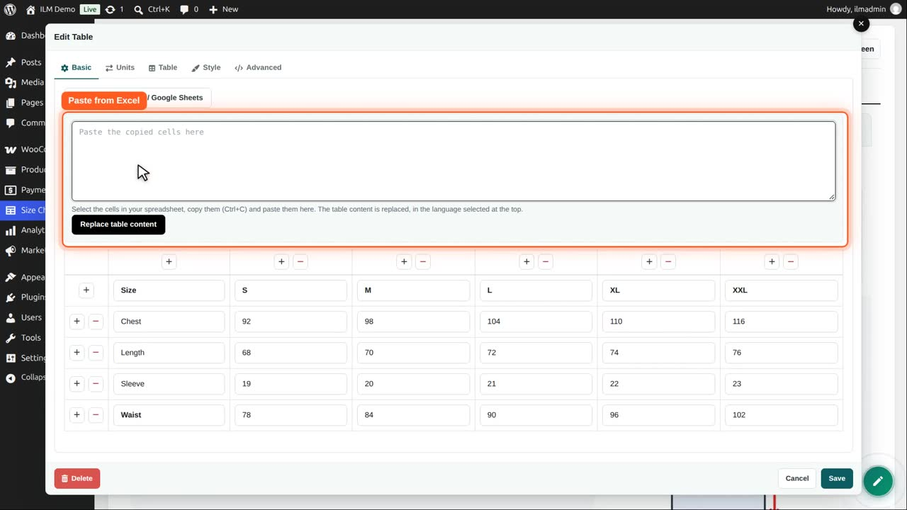
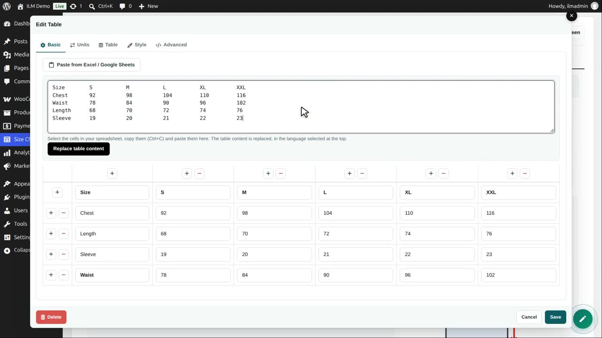
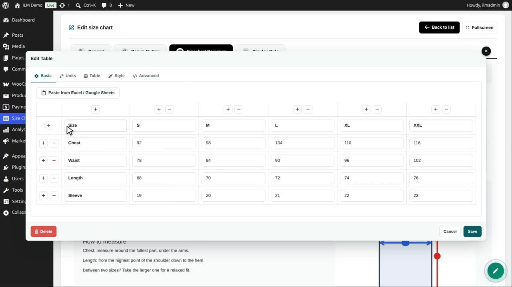
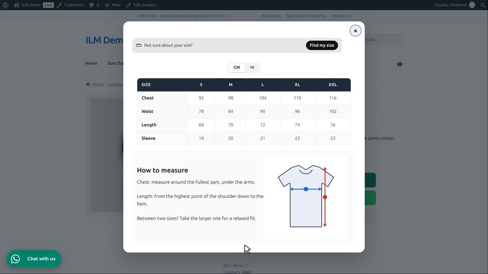

| Component | Use it for |
|---|---|
| Table | The size table itself, with an optional unit switch. |
Edit the chart, open the designer, and click the table. The table editor opens on the Basic tab.

The green plus at the start of a row adds a row below it. We add Waist, and type a value for every size.

The red minus removes a row; above the table, the same buttons add and remove columns.

Already have the sizes in Excel or Google Sheets? Click Paste from Excel, copy the cells there, and paste them here.

The pasted cells keep their rows and columns.

Replace table content fills the table with them. The style and the units are kept.

Save the editor and the chart. In the shop, the chart shows chest, waist, length and sleeve.

Every cell is plain text, so you can write sizes, ranges or notes, exactly as your shop needs them.